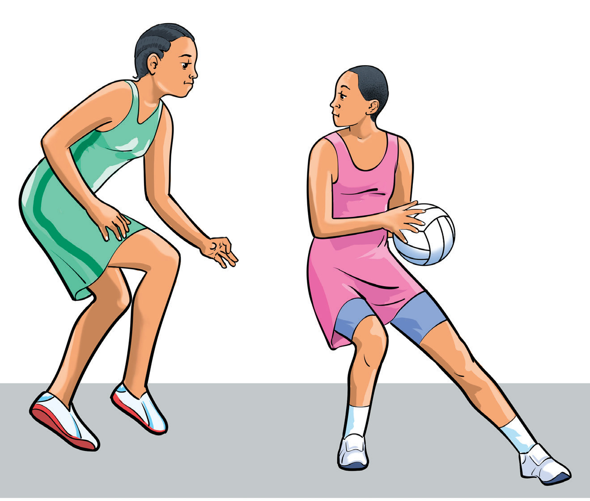

opponents effectively. To practice dodging, follow these steps:
- (i) Stay low with your knees bent and body balanced;
- (ii) Push off quickly with your non-dominant foot to start the dodge;
- (iii) Move sharply to one side to escape the defender as shown in Figure 1.13;
- (iv) Sprint away to create space for a pass or shot; and
- (v) Be ready to change direction again if needed, stay unpredictable.

Landing
Landing is the action of a player coming to a stop after receiving the ball, whether from a jump or a move across the court. The player lands with either one foot or both feet. Proper landing techniques are crucial for maintaining balance and preventing injury. Bending the knees and landing softly ensures a stable position and reduces the risk of injuries or falls. There are two techniques of landing which are one-foot landing and two-foot landing.